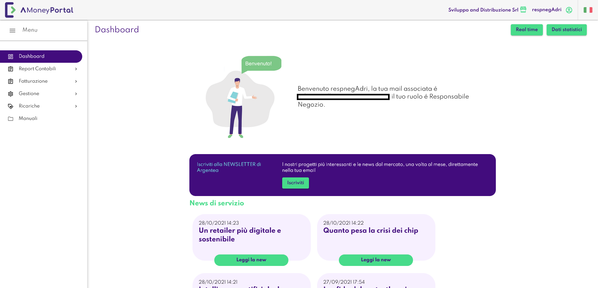
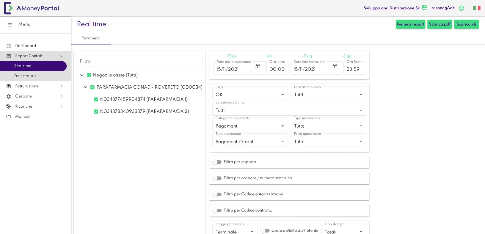
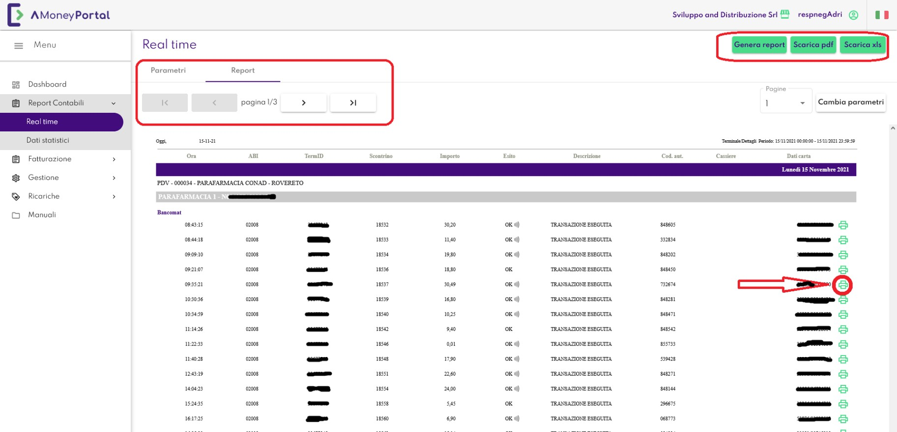
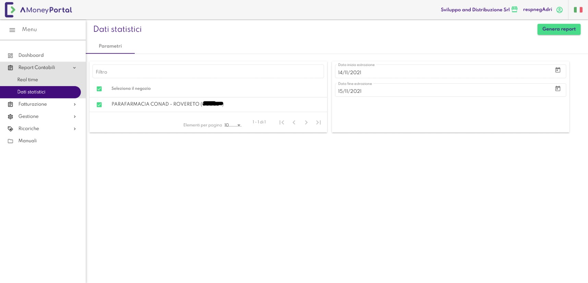
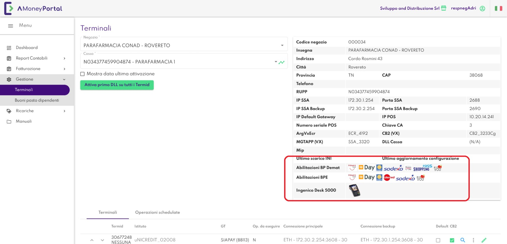

Manuale Utente
AMoney Portal
Responsabile negozio
Indice
A cosa serve AMoney Portal.....................................................................3
Come si accede ad AMoney Portal.............................................................3
Pagina di Benvenuto...............................................................................4
Come posso visualizzare i Report Contabili.................................................5
Come visualizzare i grafici “Dati Statistici”................................................11
Gestione terminali................................................................................12
A cosa serve AMoney Portal
AMoneyEMV è un applicativo web che consente la gestione avanzata dei
terminali POS e la visualizzazione di reportistica strategico-contabile.
Come si accede ad AMoney Portal
I requisiti per poter accedere ad AMoney sono:
• una connessione Internet;
• un browser (Internet Explorer è consigliato) con l'abilitazione ad eseguire
Javascript e Cookies, collegato all'indirizzo di AMoney comunicato da
Argentea;
• le credenziali di autenticazione fornite da Argentea.
Per accedere al portale AMoney aprire il proprio browser ed inserire l'indirizzo
https://AMoney2.argentea.it/ nel caso in cui la connessione avvenga
direttamente su Internet, altrimenti va inserito l'IP fornito da Argentea nel caso
di connessione da rete interna.
Pagina di Benvenuto
Una volta inserite le proprie credenziali, l'utente viene accolto con la pagina di
Benvenuto di AMoney Portal
Nella pagina di Benvenuto (vedi Figura 1) è presente un menù verticale
contenente le funzionalità che corrispondono al proprio profilo.
Nella parte centrale della pagina di Benvenuto vengono riportate info utente e
informazioni di newsletter.

Figura 1: Pagina di Benvenuto di AMoney Portal
Come posso visualizzare i Report Contabili
Questa sezione permette di ricercare tutte le transazioni eseguite su uno o più
negozi. Si suddivide in 2 sezioni: la parte real-time e quella grafici. La prima è
in funzione dell'arco temporale su cui si desidera effettuare la ricerca, la
seconda fornisce un'informazione statistica sulla distribuzione Bancomat e
Carta di Credito delle transazioni per importo o per numero transazioni.
Eseguire le seguenti operazioni:
• eseguire correttamente l'autenticazione al sistema;
• dal menù “Report Contabili” selezionando la voce “Real-Time” viene
visualizzata la maschera di ricerca che permette di accedere alla base
dati di Argentea per visionare le transazioni che soddisfano i criteri
inseriti su tale maschera (vedi Figura 2);
• nella parte blu della pagina, dopo aver selezionato un esercente, è
possibile indicare i negozi per i quali è richiesto un report contabile (deve
essere selezionato almeno un negozio affinché l'applicativo possa
produrre un report). Cliccando sulla casella “Tutti” verranno selezionati
tutti i negozi relativi all'esercente;
• Nella sezione presente a destra della pagina, è possibile impostare
ulteriori parametri di ricerca:
◦ Data Inizio
estrazione
: data di inizio dell'intervallo in cui si desidera
visualizzare il report. Come valore di default è inserita la data attuale;
sulla destra della casella è presente un calendario che compare nel
momento in cui viene cliccata l’icona specifica ; “calendario”;
◦ Ora Inizio
: ora di inizio dell'intervallo per il quale è richiesto il report.
Come valore di default sono inserite le 00:00;
◦ Data Fine
estrazione
: data di fine dell'intervallo per il quale si desidera
visualizzare il report. Come valore di default è inserita la data attuale;
sulla destra della casella è presente un calendario che compare nel
momento in cui viene cliccata l’icona specifica “calendario”;
◦ Ora Fine
: ora di termine dell'intervallo per il quale è richiesto il report.
Come valore di default sono inserite le 23:59 in modo da ricercare
complessivamente come valore di default le transazioni della data
odierna;
◦ Esito
: indica l'esito della transazione, può assumere valori “OK”, “KO”,
o “Tutti” per comprendere sia le transazioni eseguite correttamente
sia quelle non eseguite. Il valore di default dell'esito corrisponde ad
“OK” ovvero le transazioni con esito positivo;
◦ Istituto Bancario
: rappresenta la banca con la quale è avvenuta la
transazione. Per default vengono inclusi nella ricerca tutti gli istituti
bancari, il valore di default infatti è fissato su “Tutti”.
◦ Tipo Carta
: il tipo di carta con il quale è avvenuta la transazione. Per
default vengono incluse nella ricerca tutti i tipi di carta: la selezione
infatti è fissata su “Tutti”. Selezionando “Gift Card” o “Buono Pasto” è
possibile filtrare per queste ultime inserendo il codice ad esse
associato. Possono essere inseriti ulteriori filtri selezionando le caselle
relative a “Filtra per importo”, “Filtra per cassiere/numero scontrino” e
“Filtra per buono pasto”.
• Vi sono poi altre diverse modalità di produzione del report che, in base
alle esigenze dell'utente, possono essere modificate.
I parametri richiesti sono:
◦ Raggruppamento
: può essere per compagnia, per terminale, per
analitico buoni pasto, per periodo o per due tipi di combinato,
cassiere, chiusure e storia gift card.
Il raggruppamento per “compagnia” permette di evidenziare per
ciascuna cassa le transazioni suddivise in base alla carta utilizzata.
Il raggruppamento per “terminale” permette di evidenziare ad un
livello superiore i tipi di carta e, successivamente, suddividere le
transazioni tra le varie casse appartenenti al negozio;
Il raggruppamento per “periodo” è simile a quello per compagnia, ma
manca della suddivisione per giorno, consente quindi il calcolo dei
totali sul periodo selezionato nella maschera.
Il raggruppamento “combinato” e “combinato 2” sono
un'aggregazione del report per terminale con uno contenente i totali
suddivisi per compagnia e istituto bancario.
Il raggruppamento per “chiusure” visualizza le chiusure e i totali
eseguiti da ogni cassa su ogni banca del negozio selezionato.
Il raggruppamento per “cassiere” mostra, se presente, il codice
cassiere e le casse sulle quali ha operato e successivamente un
raggruppamento per terminale associato a ogni cassa.
Il raggruppamento per “analitico buono” pasti mostra la quantità e
l'importo totale dei buoni basto spesi. Questa voce necessita della
selezione “Buoni pasto” dalla voce “Tipo di carta”.
◦ Tipo Stampa
: rappresenta la modalità con cui viene riprodotto il
report. Il tipo stampa “Totali” permette di visualizzare l'ammontare
dei totali relativamente al raggruppamento scelto. La modalità
“Dettagli” invece, permette di visualizzare l'elenco completo delle
transazioni che soddisfano i criteri di ricerca. Per ogni transazione
vengono visualizzati: data, ora, ABI, ID del terminale, importo, esito,
descrizione dell'esito, codice di autorizzazione, dati della carta
(mascherati). È consigliata la reportistica dettagliata solo in casi di
verifica di transazioni non andate a buon fine ovvero “KO” o altre
situazioni particolari. Il tipo stampa selezionato di default è “Totali”.
Per il raggruppamento “combinato” e “combinato 2” è possibile
scegliere solo il tipo stampa “Totali”, mentre per il raggruppamento
per “chiusure” è disponibile solamente il tipo stampa “Dettagli”.
◦ Tipo Output
: permette di scegliere in quale formato mostrare il report.
Il tipo “Report” apre il report in una tabella colorata in cui vengono
elencate le transazioni effettuate e permette di gestirle con una barra
di comandi. Il tipo “File di testo” apre il report in una scheda testuale
in formato CSV. Di default è selezionato “Report”.
Al fine di non appesantire la ricerca sull'archivio dati, viene consigliato di
eseguire delle ricerche relative ad un intervallo di tempo ristretto.
Viene riportato in Figura 3 un report a titolo esemplificativo.
Nel caso in cui il numero di transazioni porti i report ad estendersi su più
pagine, attraverso le frecce di spostamento nella toolbar in alto e in basso è
possibile passare da una pagina all'altra.

Figura 2: Pagina con maschera di ricerca dei Report Contabili

Figura 3: schermata con toolbar
Il sistema AMoney Portal permette inoltre l'esportazione dei dati contabili in
forma di foglio elettronico o PDF. Per utilizzare questa funzionalità è sufficiente
utilizzare l’apposito pulsante di estrazione “Scarica pdf” o “Scarica xls”. La
toolbar di riferimento è indicata dalla freccia rossa in Figura 3. Passando con il
mouse sopra le voci della tabella, compariranno le voci di descrizione dei
campi. Per esempio mettendo la freccia del mouse sull'ora della transazione
comparirà la data in cui è avvenuta la transazione, o se una transazione è stata
rifiutata, comparirà il tipo di errore che si è verificato.
E’ possibile stampare una copia dello scontrino della transazione cliccando
sull’icona della stampante a destra sulla riga della transazione.
Come visualizzare i grafici “Dati Statistici”
Eseguire le seguenti operazioni:
• selezionando “Dati Statistici” dal menù “Report Contabili”, è possibile
selezionare i negozi per i quali si vuole ottenere un report grafico relativo
all'utilizzo di Bancomat e Carte di credito (deve essere selezionato
almeno un negozio affinché l'applicativo possa produrre un report).
Cliccando sulla casella “Seleziona il negozio” verranno selezionati tutti i
negozi ;
• è possibile impostare i dati per la generazione del grafico come “Data
Inizio” e “Data Fine”;
• cliccando sul pulsante “Genera report” vengono generati i grafici a torta
relativi al periodo indicato e i grafici tabellari.

Figura 4: schermata Dati Statistici
Gestione terminali
Eseguire le seguenti operazioni:
• eseguire correttamente l'autenticazione al sistema;
• selezionando “Terminali” dal menù “Gestione”, è possibile visualizzare
◦ la configurazione bancaria di ogni cassa
◦ le abilitazioni dei vari servizi Argentea:
▪ buoni pasto cartacei,
▪ buoni pasto elettronici,
▪ pagamenti avanzati (Satispay per esempio)
In caso di abilitazione di uno specifico servizio viene mostrata la relativa icona
di abilitazione

Figura 5: pagina gestione Terminali